the places she went, and the people she shared them with
happy 25th birthday40 notes · 30 places
How this works
For Julia’s 25th birthday, everyone who shared her 24th year was asked one thing:
pick a place you went with her, write a short note, and send a photo if you have one.
40 people answered, from her rooftop in Chinatown to a seafood buffet in Ginza.
Together they make a map of the year.
Every place has a number. Find it on the poster, then find it here to read what was written there.
The journey starts at home, wanders across New York, heads out of the city, and then goes around the world.
40notes
30places
5countries
8,497miles from home, at the farthest pin (Manila)
The year, seen from home: every pin in its true direction from Julia’s place,
distance squashed.
Home base: hot pot nights, rooftop charcuterie, Lupa experiments and one very spilled bag of popcorn.
Mom Marcia
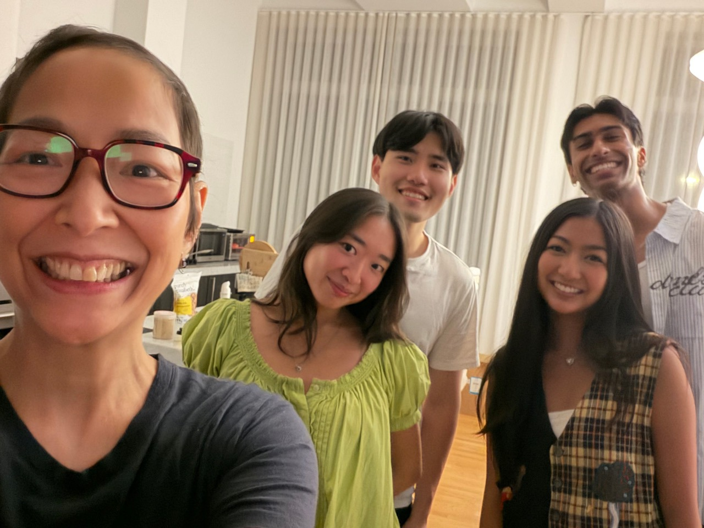
Dear Julia, How are you 25 years old already? I can still remember my first born child with her hair all up, insisting to sleep outside and watching wini a poo all day long. I am lucky to be have been part of your 24th year while I was in New York, experiencing a hello and "shake" live from you as you go on with your adult life. Huhu. Mommy is very proud that you're living your life to the fullest ( as you should). I love you. Happy birthday! Mommy
Stella roommate & cousin
Happy birthday Julia!!! I know this is such a lame place to say as your roommate now, but my favorite memories with you since moving to New York have all been in the apartment!! Off the top of my head, I love the memory of our cousins hot pot night. I hope you know how much we really appreciated how you planned that whole night and brought the family together for something so cozy and comforting – it was the highlight of everyone's week that time and something we all desperately needed to lift our spirits. But aside from that, I can't begin to tell you how much I love all the little interactions I get to have with you since moving in. Even if it's just 10 minutes after work in the hall or kitchen or sitting with you while you prepare Lupa stuff, our little chats are so special to me, and I really take all your advice to heart. I remember telling you that one of the things I look for in my friendships is my ability to look up to them and want to be like them. I think that quality couldn't be more true for you. Whether it's in a silly sense like me really liking the Bath & Body works lotion you had and then gave to me as a kid (I continued buying it 4 years straight after that); or whether it's me wanting to be more like you nowadays when it comes to intentionally and proactively showing your friends how much you care, I see you as someone I can learn so much from. I hope you know how much your friends and family love you because you are so special! Have the best bday ever!!
Ella
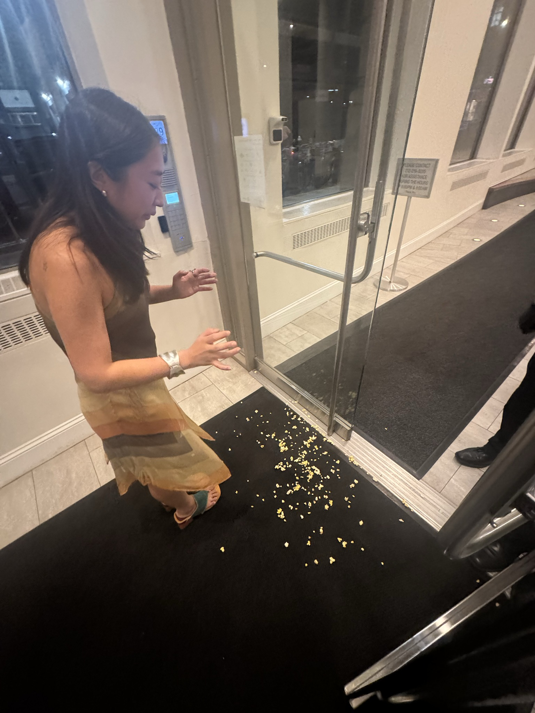
At the apartment when Julia spilled our popcorn in the lobby leaving the doorman to clean it up (we got high, tried to watch Minions, and got turned away at the door) Happy birthday dear sister. Cheers!
Isabella
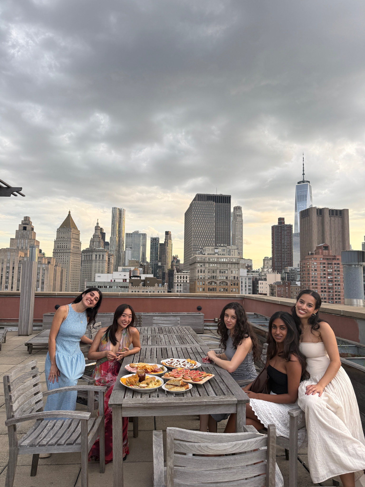
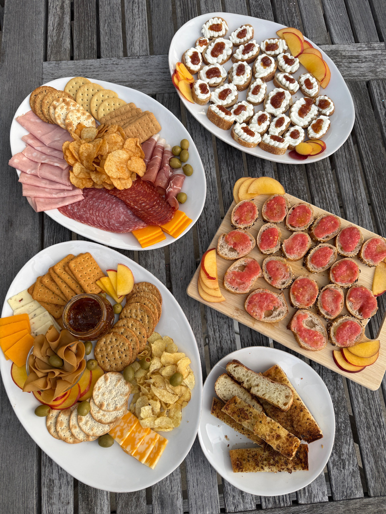
HAPPY BIRTHDAY JULIA!! ⭐️💫I’m so grateful to have you in my life for the last three (almost four 😭) years! You are such an inspiration and always motivate me to be in better touch with my creative side, whether it be from galerie and lupa or the new year mood boards and your hummus + ninja creami idea 😹 🥰 my favorite memory this year was charcuterie on your rooftop and trying your tomato basil salt and straw ice cream🍅🍨 I love spending time with you and hope you have the happiest birthday ever!!!!🥳🥳
Marcos
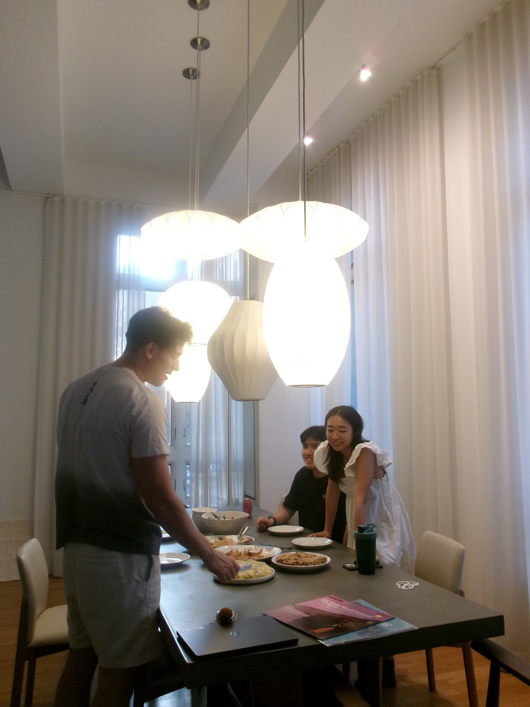
happy birthday Julia! hope you have a great day! we should play bananagrams / mahjong all of us soon -Marcos
Grace
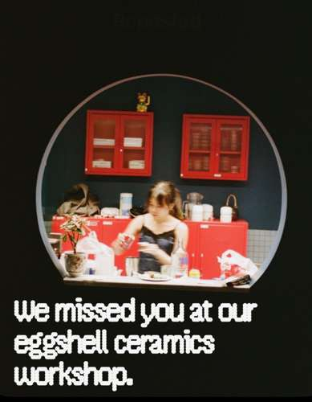
happy birthday julia!!! hope you have an amazing birthday. im very grateful to have met you through pj (some might say youre better than him 🤭), thank you for being the kind, creative, hardworking, and thoughtful friend you are!! I have many favorite memories together… but I will have to say my favorite is when we made drinks for lupa 😆 (unfortunately no pics from that day) it was so fun to test out drinks with you, im always in awe of your creativity. And thank you for trusting me!! I also realized we havent done a girls hangout in 2026, so that will have to change in 2027 😠 to many more mahjong, lupa, art, hiking, acquired podcast listening, and maybe running (?) hangouts!!
Pavin
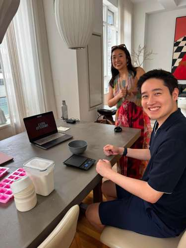
Happy birthday Julia!!!!!!
I had a wonderful time in NYC with you and PJ! Thank you for having great kbbq with me, going to the science history museum, chelsea market, and giving me a free LUPA STUDIOS class! (thank you so much for the mahjong tiles, was amazing)!
I am truly happy that PJ lucked out and managed to swing someone as great as you. Really. On behalf of us Sethbhakdis, thank you for putting up with him for so long haha, and we really see the person he is becoming with you and are beyond happy. You are a good person and you are wonderful for PJ beyond doubt. We can only hope he can provide the same to you.
Have a great birthday and eat lots for us!!! We are always here for you whenever you need.
-Pavin
2
Spongies Cafe
Little Italy, Manhattan
Caroline
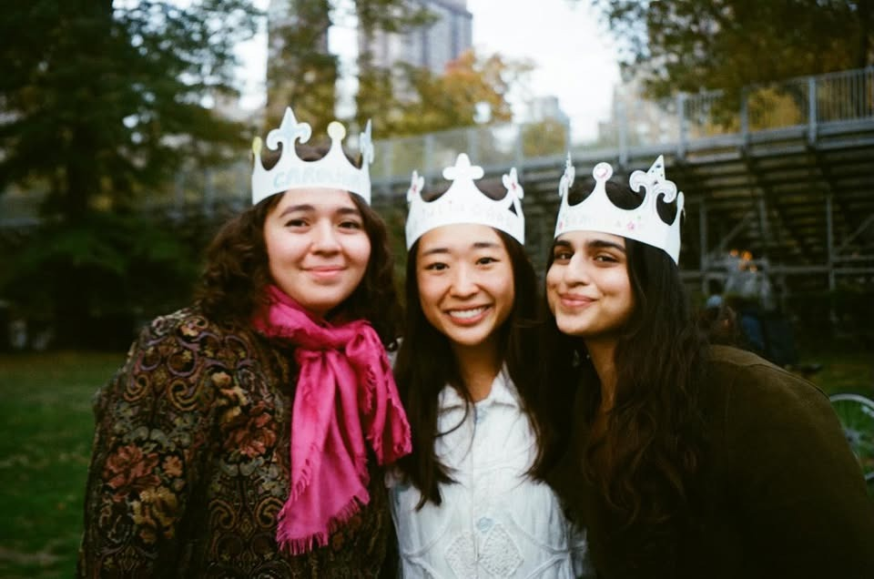
This fateful day Julia and I ventured to her beloved Spongies to collect our first batch of eggs. For many reasons this place is so special, but for me it showed me the kind, bubbly and go-getter, boss bitch Julia is. Nothing gets in her way, not even a Hulken that won’t fit all our eggs or a leaking garbage bag. To celebrate Julia’s arrival on this earth, I want to share that being around Julia is like experiencing someone pop confetti, a mix of anticipation, surprise, joy and awe. I feel lucky to be in your realm Julia and to have someone like you care so deeply about those around you, and not care about any obstacles or challenges in your way, it’s truly a gift to balance these things. You inspire me to grow and expand, to change with the seasons and to always be silly and make room for a giggle. I love you and I hope today is as marvellous as you!
3
The basement bao joint
Fu Zhou Wei Zhong Wei Jia Xiang Feng Wei · East Broadway, Chinatown
Mick
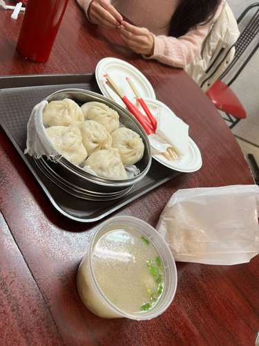
Happy Birthday Julia! I believe the last time we hung out in NYC was with Anouk in that basement bao joint, where you said I had a "Carrie Bradshaw" career. Miss chatting and eating around Chinatown! Till the next meal.
4
Wu's Wonton King
Lower East Side, Manhattan
Seline
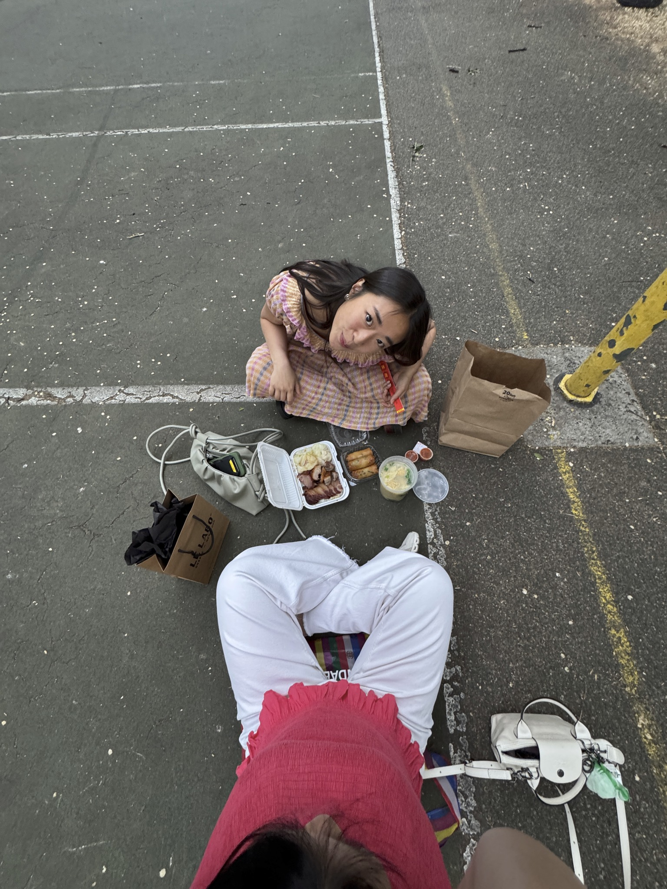
Happy birthday Julia!!! I miss you so, so much. Our annual hangouts are always one of my favorite parts of the year; it warms my heart to see how much change and growth we’ve had in such a short amount of time. No matter where we are in life or how old we’ve become, I would fly anywhere just to sit and share a meal with you
5
Ludlow Flea
Lower East Side, Manhattan
LJ
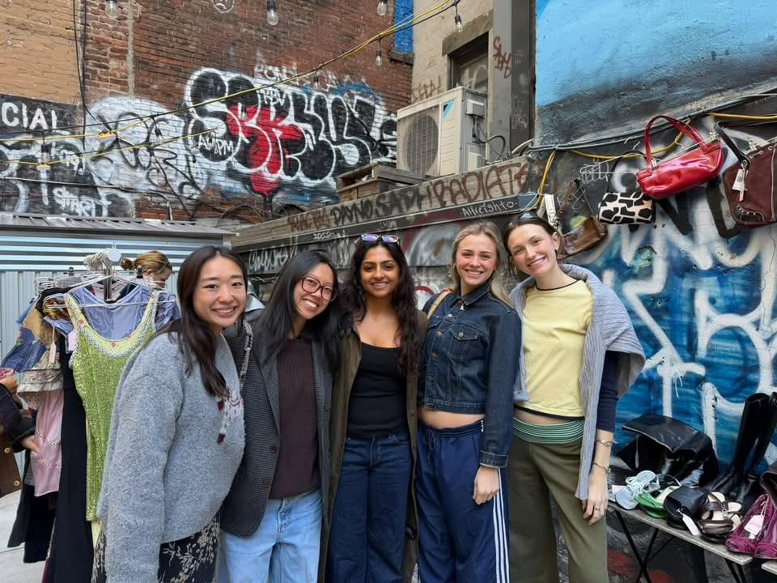
Happy Birthday Julia!! I’m constantly impressed and inspired by everything you do, from Lupa to Beloved Ones to the cutie flea market sale you included me in 🙂 You always find such special ways to put your creativity into the world! I hope this next year brings you everything you’ve been wishing for and more. Love you lots, and I’m so happy to be celebrating you! - LJ
6
Recente
East Village, Manhattan
Sam Li
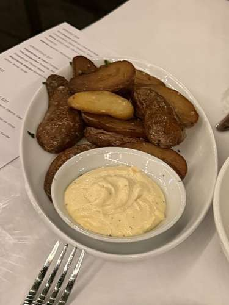
Dearest Julia,
Happy birthday my Libra sister!! Not much a travel experience but I chose our dinner outing at recente because the service was so bizarrely funny and also our first 1-1 hang muahaha. Please enjoy this photo reminder of the crack sauce which I still think about from time to time. I am so glad I met you and forever grateful that you have enriched my nyc experience so very much. Have the bestest of birthdays and I can't wait to celebrate with you xxx
Lots of love,
Lisa mongous
7
Mimi's Frozen Yogurt
Nolita, Manhattan
Lareina
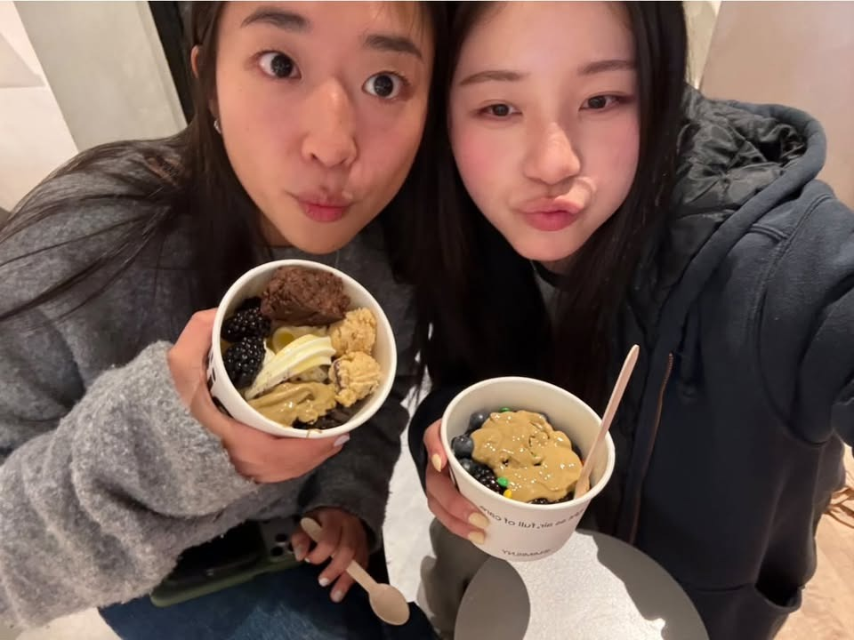
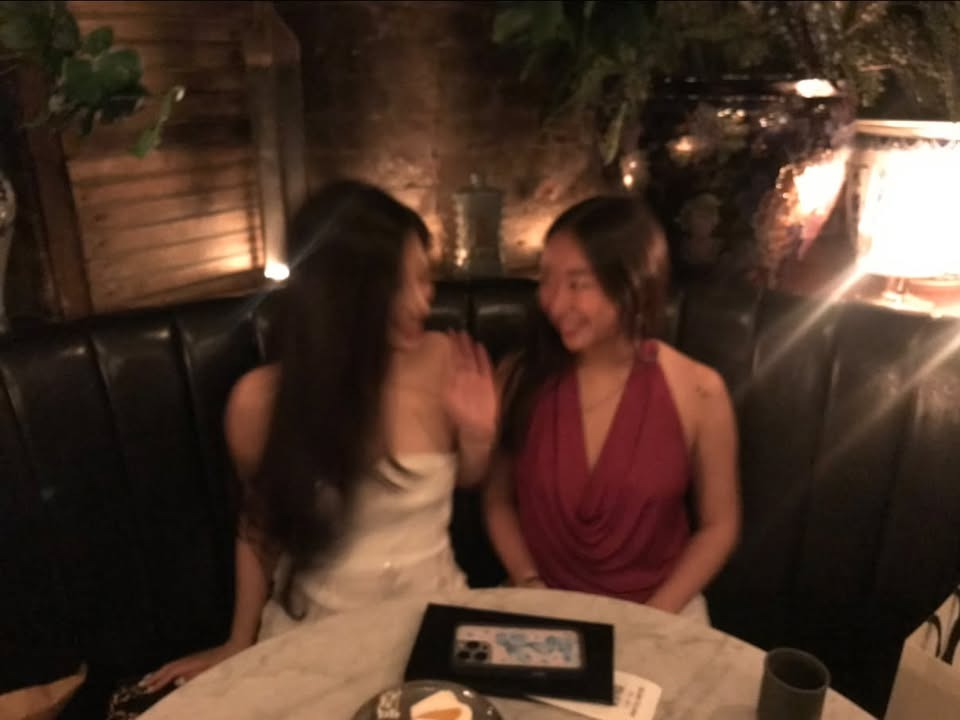
happy bday juju 💌 even tho we’re now thousand miles apart, but yk i miss u so so much!! my fav mems of us this year all took place around chinatown area, where we spent most of our times at ofc. we celebrated my last (hopefully again in the future) birthday in nyc and had our all time fav mimi’s w hella pistachio sauce for dessert after our poke bowl night 🐟🐟 i still think about it everyday bc how r we such good chefs omg. anyways i hope 24 treats u as good as who u r as a person, so sad i’m not there this year to spend ur day w u ;( but again MISS UUUU MY POOKIE I LOVE UUU my marathon queen my forever day 1 🎁🎁🎁
8
SOB's
Sounds of Brazil · Hudson Square, Manhattan
Ashna
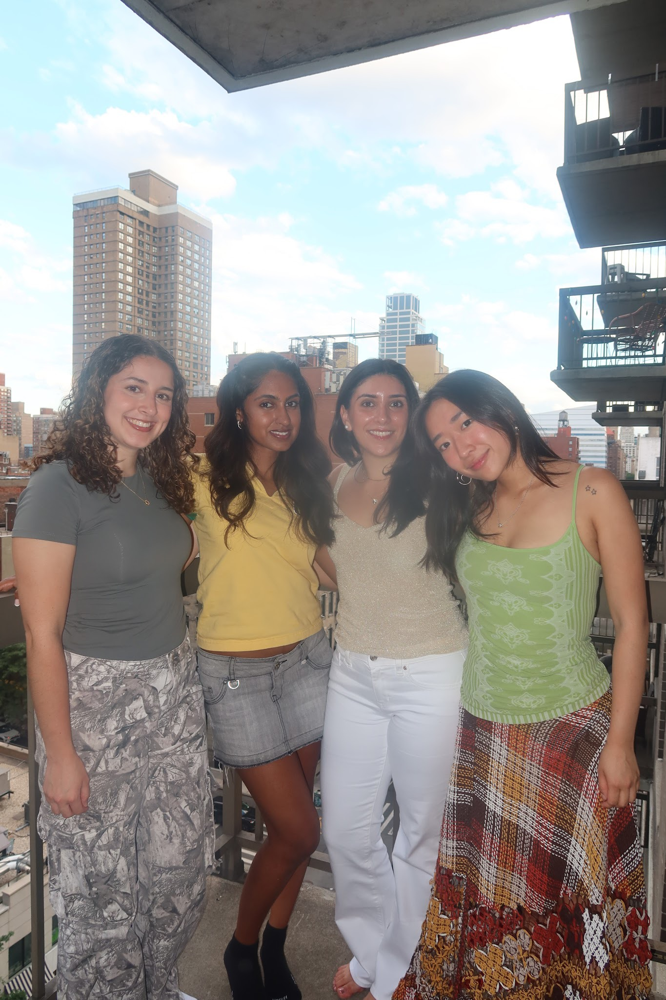
Juliaaaaaa! Alas we did not travel tgt this year but we had some GREAT freaking memories!! Happy birthday to the sweetest, warmest, happiest, most entrepreneurial girl:) I admire you so much and I wanted to give a shout out to our World Cup watch party at the Brazilian club hehe! It was SOO much fun and we were sooo sloshed! Madrid may be where our friendship began but some of my favorite mems with you have been here in nyc❤️
9
Madison Square Garden
Midtown, Manhattan
Noah cousin
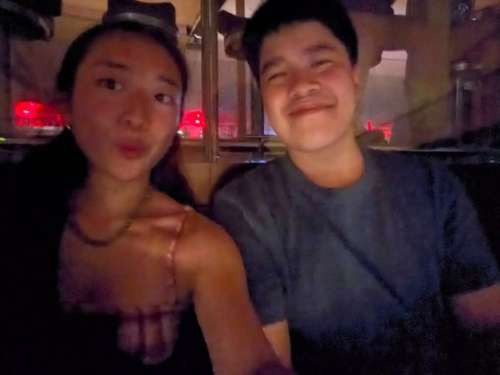
Happy Birthday, Julia! Thanks for being such a great cousin and for hosting me in New York and showing me around. My favorite time with you ever was the Olivia Dean concert. Even though it took me a lot of time and therapy to get over my hatred of you for getting me lost in Hawaii (joke) , I finally like you. Love you a lot!
10
The Penn Club
Midtown, Manhattan
Angela
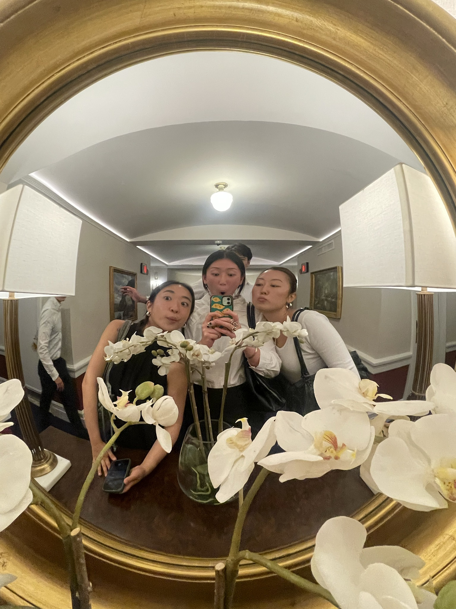
Julia, a photo for you at the most random of places where we witnessed history after trudging the streets for an hour trying to find a suitable bar to enjoy the nail biter of a Knicks game. So happy to have been there with you at the Penn Club basement ringing a cow bell. Forever grateful to have met you!! You bring so much light, kindness, and warmth into everyone’s lives and I am so thankful to be apart of your world!! Love, Angela
11
Central Park, The Mall
Central Park, Manhattan
Alan
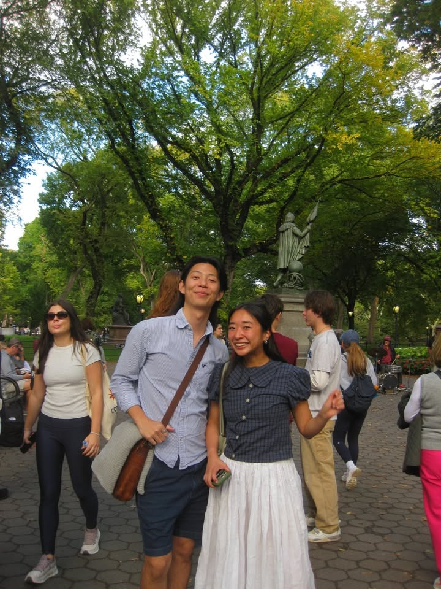
Julia!!! No one brings as much light and joy into a room as you do. Forever grateful to know, love, eat, watch movies, navigate corn mazes, attend concerts, thrift, and think about cup-filling with you. Happiest of birthdays to you, my love. Excited for this one and the many, many more to come.
12
Sonic
Long Island City, Queens
Kaavya
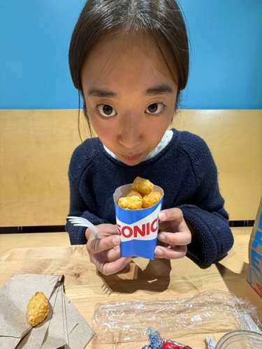
My dearest Julia, happy birthday!!! One of my favorite memories from this past year was the heart to heart we had at the Sonic after egg harvesting. I love learning more about you and your wacky mind, and I am so excited to dig deeper into the wonderful enigma that is Julia Sy's mind. You are a gem in this city and I love you very much, happy birthday!!l
13
Gantry Plaza State Park
Long Island City, Queens
Hannah Wang
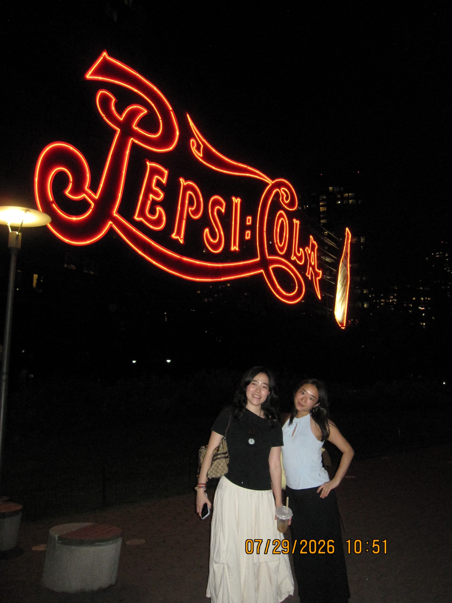
Was so fun hanging out in LIC! It was so funny when we were sitting by the pier and the random lady started speaking to us in Spanish and you were the only person who responded 😭 Even thought we don’t get to see each other often seeing you is always so fun!!
14
Brooklyn Steel
East Williamsburg, Brooklyn
Not a memory yet: the concert Hao Hao is still working on.
Hao Hao
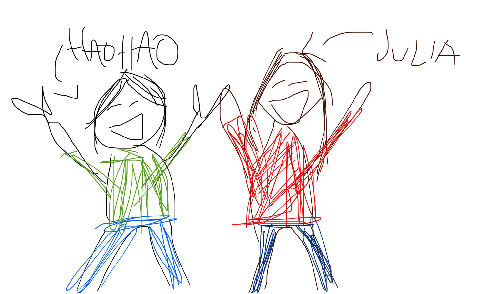
no photo of the two of them yet, so she drew one
HBD Julia!!
I can’t believe you’re turning older again and I’m not there to celebrate you with YOU! AGAIN! PJ has organised such an awesome surprise for you, but I am so regretfully embarrassed that after searching my entire camera roll WE DONT HAVE A SINGLE PHOTO TOGETHER?!?!
Anyways, this is what I hope us to look like if we ever got to go see a concert together, ideally @ Brooklyn Steel! (Don’t worry sweets, I’m working on it.)
Until then, I wish you an abundance of happiness, new inspirations, warm company, and peace this coming year. I can sense, it’s gonna be a bitchin’ good one 🌟!
很抱歉，不小心把咱们俩的衣服画成了红配绿。。。果然我不是设计师👩🏻🎨
15
McCarren Park Greenmarket
Williamsburg, Brooklyn
also on the map: Oberon & the secret tunnel
Gabby
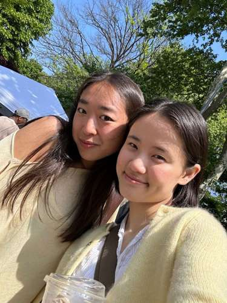
HAPPY BIRTHDAY JULIA!! I love that we have matching yellow knitwear and also now matching brown mugs from the McCarren park farmer's market 💛 you are the friend I see New York with and this is not pictured here and we haven't eaten there (yet) but I think we can claim Oberon and the secret tunnel as our spot. Let's do it when I'm back! I love you always 💐
16
Williamsburg waterfront
Williamsburg, Brooklyn
Alicia
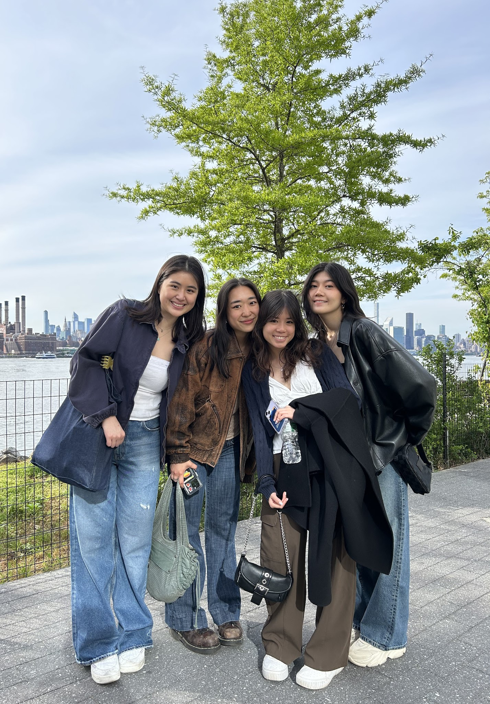
julia - i knew i wanted to be your friend the moment we met. you were effortlessly cool, so creative and passionate about everything you do, and just genuinely down-to-earth. i remember this day being the 1st time you introduced me to pj, when we all sat on the beanbags at muji and yapped about things i definitely don’t remember anymore. i always have fun just doing nothing with you. enjoy your day cutie girl <3
17
Brooklyn Botanic Garden
Prospect Heights, Brooklyn
Kim
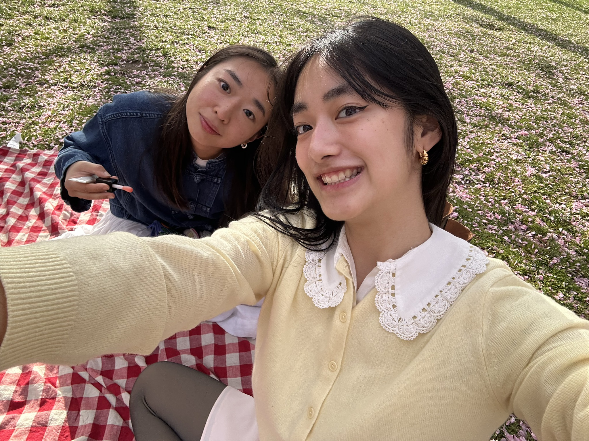
happy birthday my darling julia!! just by virtue of living life alongside you, you’ve challenged me to be a better friend and more audacious in my creativity because of all that you are. im always so amazed with everything you accomplished and I am blessed to witness it. we’ve attended two years of hanami nights (feels like it’s been 10 years, has it only been 2 years? 2 years feels like forever, or however big thief sang it). you remind me of spring—always in bloom and welcoming the tide of change. I’m so lucky I’ve gotten to witness the petals turn pink twice alongside you, and I hope we can spend the rest of our lives embracing the oncoming warmth of the world together. love you!
18
Oley
Pennsylvania
Rachel
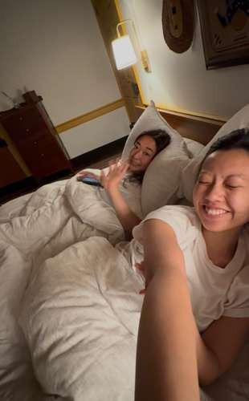
hiii juliaaa happy birthday!! You’re old just like me now!!!! Except you’ll always be cute punch to me.
This is one of the many favorite memories I have with you this year, when we influenced so hard, we ended up on our dream touch grass vacation. As you may remember this night, i had a moment where our roles reversed and suddenly I was the one scared in bed. You being you, I knew you would not scold me for forcing you downstairs to brave the murderer with me because you are nothing but kind, patient, loving, and all the other positive adjectives. Friendship with you is easy.
Love you so much Julia. U my sista from another mother, my business partner in crime, and my forever friend crush.
May we continue making many many many many special (nyc) memories together and even more wherever you end up in the world. So happy I found a forever friend in you.
19
Beacon
Hudson Valley, New York
Lance
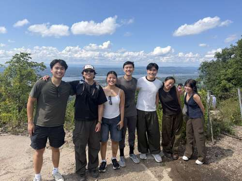
Happy Birthday Julia! So glad to have met this past summer. One of my favorite memories was our train ride back from beacon. It was one of the best conversations I've had in a while. And thank you for hosting the dice game last weekend, I had so much fun meeting all your cousins and their cousins. Happy 25!
Meagan
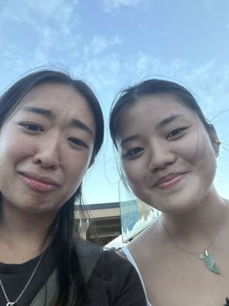
might be our only pic of just the two of us
happy birthday julia!! i am so happy and honored to have gotten closer to you this year! you are such a kind and warm presence in my life and i hope you have the best 25th birthday! i am so lucky to have someone like you i can be myself around and understand how i think/where i am coming from - also so happy i get to bond with someone over our mutual love for ella haha! beacon was so fun i think my favorite part was sharing momo with you! - meagan
20
The Hamptons
Long Island, New York
Jonathan
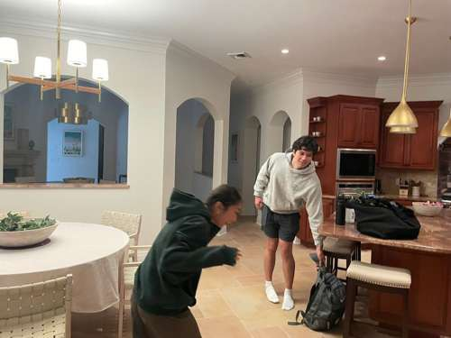
Feliz cumpleaños Julia!!! Although we have been to many places together in the past year, this was the only picture I could find of us solo in the same frame, but it was from a place where we created so many great memories so I'm happy about that. Thank you again for being such a wonderful friend and watching the days go down before you leave to Thailand is a pain, but that only means we should cherish the time and hang out more! Hope you have a great day filled with many blessings 🙏
21
Out on the Atlantic
Off Long Island, New York
John Wee
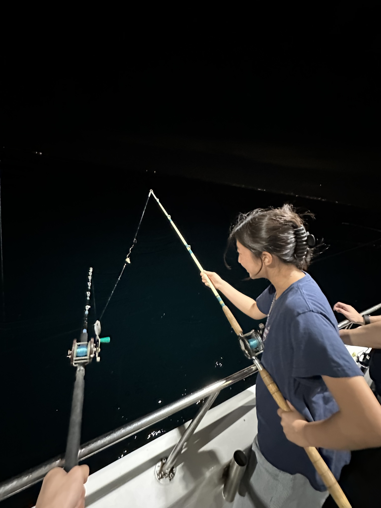
Happy birthday Julia! Thanks for being such a thoughtful friend and also for the many fun memories this year.
Like when we went fishing and you thought you immediately caught a fish but it was just someone else’s bait.
22
Harvard
Cambridge, Massachusetts
Dad
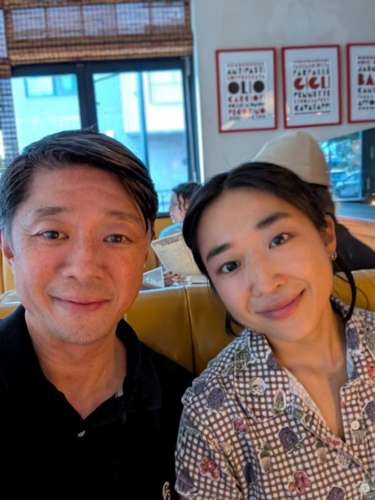
Happy happy birthday Julia!! May all your dreams come true🙏🏼 This is our picture when you took the time to visit me at Harvard!❤️ Love always, Dad
23
Boston
Massachusetts
Mariah
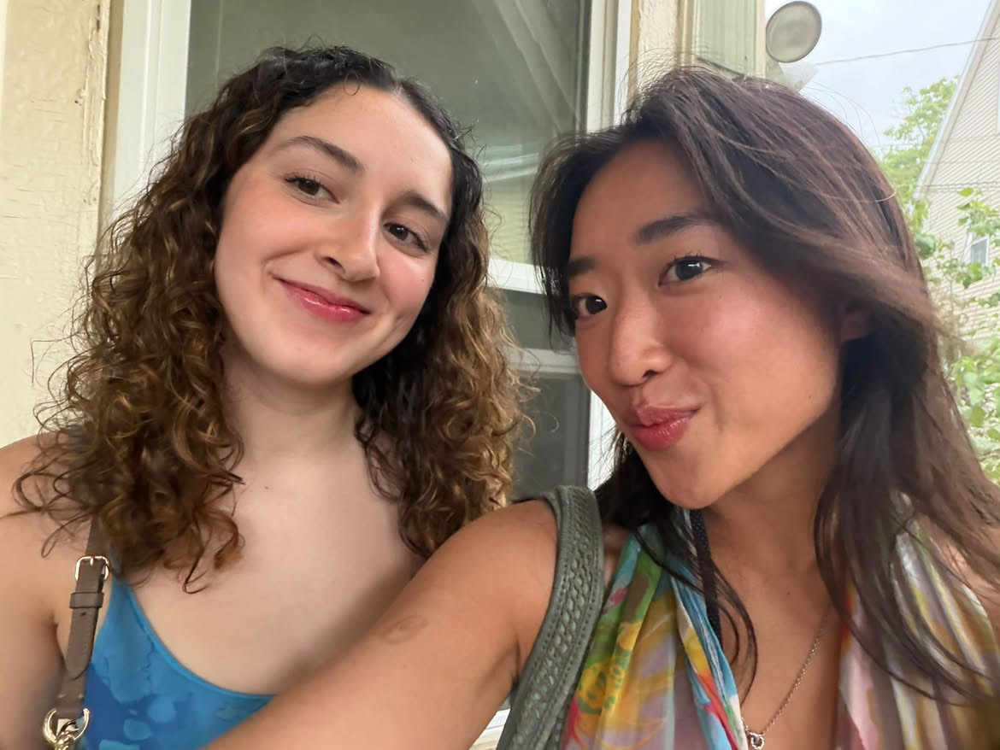
Happy birthday, Julia! I’m sure you already know how much I admire you and adore everything that you do, but I’m going to keep saying it!! You’re such an inspiration to the people around you and I’m so grateful to be your friend. My favorite memory from our trip to Boston is falling asleep together on the couch at Jack’s Bar hahaha. Love you!!
Anouk
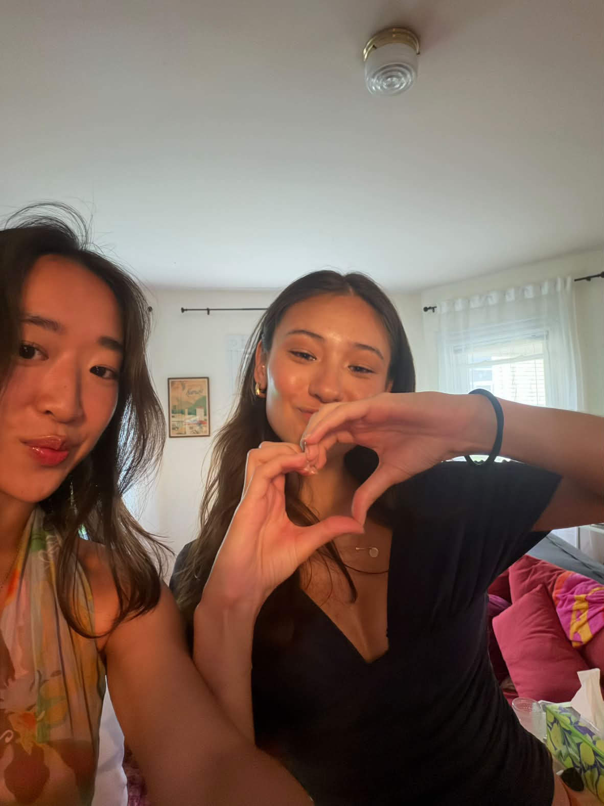
HAPPY BIRTHDAY!!! I hope you have the most wonderful day. For some reason this is the only photo we have together this year but it was such a fun weekend we don’t even need photos to remember!! (Although you do still need to come to a Red Sox game with me). Your friendship is so important to me, you’re the most thoughtful and caring person I know. I’ve loved hearing about all the cool things you’ve done with Lupa Studios and all the cool people you’ve worked with and I know 24 will bring so many more opportunities for you. So sorry I can’t be there to celebrate with you in person but I’m always thinking about you and looking forward to the next time I get to see you!! Love you!
Anouk
24
Vancouver Thanksgiving
Richmond, British Columbia
Zoe cousin
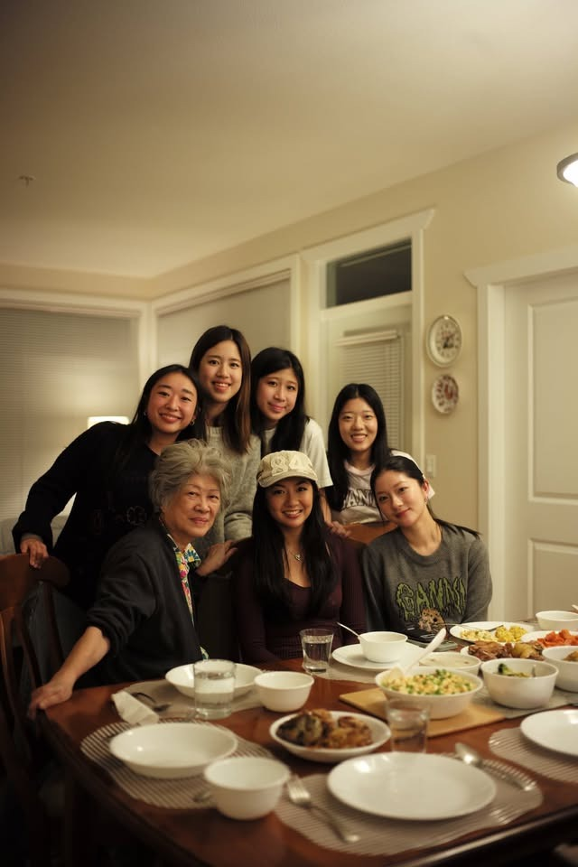
Happy 25th birthday my beloved dearest boogie woogie julia!!! I love you so much and am forever grateful to be such close cousins and see you all the time! You’re the most considerate, kind, and passionately creative person I know. You continue to inspire me, whether it’s through your projects or simply your curiosity for life. I hope that you can continue to be funny and sparky always! One of my favorite memories together was Vancouver thanksgiving. I loved the photos you took and the stop motion video you made. I also thought getting high and watching ‘wicked: for good’ in 3D was so funny (Pls can we get fried together again). So excited to spend more time together this year and I hope this year will bring you lots of love, luck, and bountiful eggshell harvests 🌸🌼🥚🐣
Matty
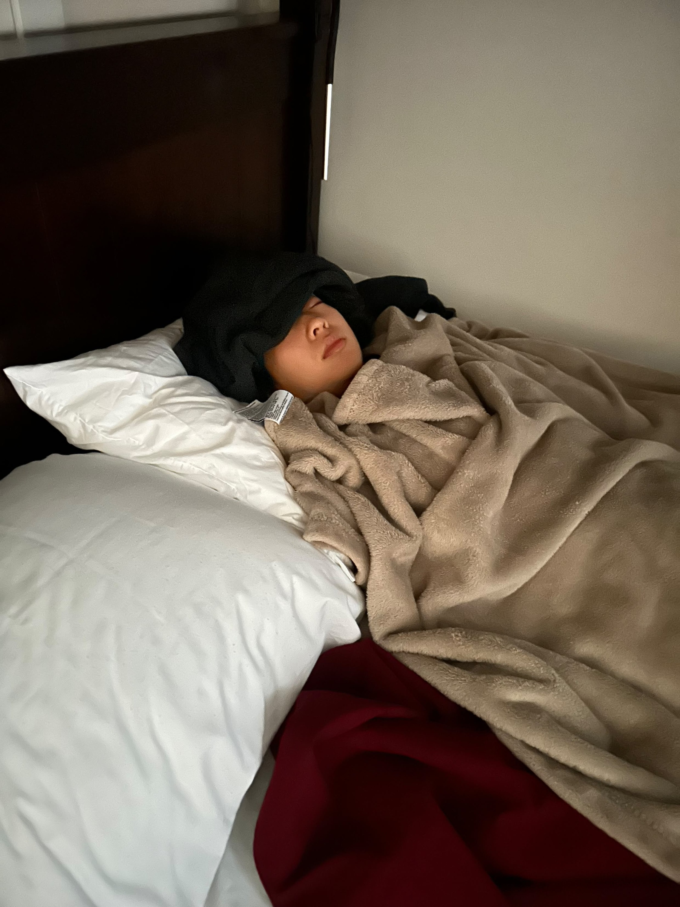
#BigSpoon
Happy 25th my beautiful Juju! You are such a star, and I am so lucky to be basking in your glow ⭐️ I hope you have the best year ever, and may you continue to do amazing and creative things! My favorite memory with you at 24 was in Vancouver for Thanksgiving! We are always bedmates, and this trip was no different. I distinctly remembering turning onto my side and waking up with you pressed up against me #BigSpoon #LOL 🥰🥄 I hope we are roomies in every lifetime! I LOVE YOU & HAPPY BIRTHDAY 🎂🎈
25
Seafood Buffet Ginza Happo
Ginza, Tokyo
PJ
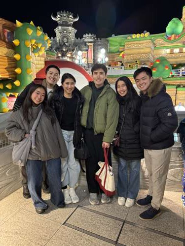
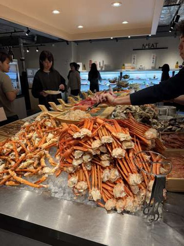
happy birthday julia! japan last year was such a wonderful trip and i had so much fun spending the holidays with you. i remember crying during our seafood buffet because of how beautiful that moment was seeing my loved ones together so happily. thank you for always being a sunshine in my life and i am so glad to be able to move back to new york and spend this year with you. love you so much and happy 25th!
26
Kiyomizu-dera
Kyoto, Japan
Jui
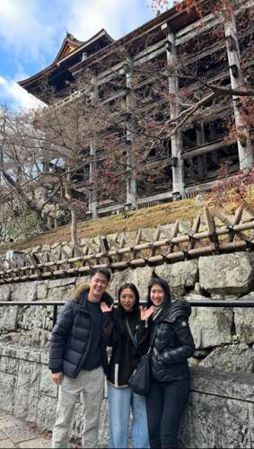
Happy birthday Julia!! I hope this year treats you amazing! Wishing you good health, success in all your endeavors, and a ton of happiness and smiley faces for you and your loved ones
Getting to know you has been such a joy, especially during our Japan trip, whether it's strawberry-picking, onsen-hopping, or just seeing your photography skills in action!
Getting that photo of the three of us "potential in-laws" finally standing together against the siblings was such a fond memory (we were definitely the better-looking trio!) But ultimately as a favorite, I hate to say nothing beats that legendary Jackbox session where a certain "-demon" analogy was made!!
Jokes aside, wishing you a very happy birthday, and can't wait to see you again real soon this year Julia!!
- Jui
27
Shinsaibashi-suji
Osaka, Japan
Chris
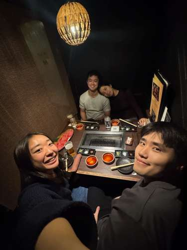
Hi Julia Happy Birthday! I really really enjoyed getting to spend quality time with you, PJ and the rest of the family in Japan! I especially enjoyed this private dining experience the four of us had. Time flies but you have your whole life ahead of you! I'm looking forward to the many more fun adventures we'll embark on together as a group.
28
Universal Studios Japan
Osaka, Japan
Mint
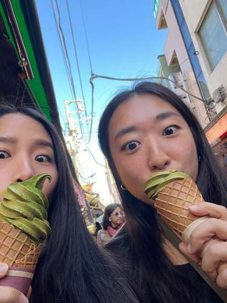
Happy birthday Julia!! I'm forever grateful for all the fun we had in japan, like when you cried on the rollercoaster and on the shark ride! Seriously tho I had so much fun on that trip and I hope we can do it again soon. I also want to say thank you for making my brother so happy. My parents and I always say that he has a heart of gold, and I'm so happy to say that I think he met his match with you. I wish that only good things and good people come your way and that you get everything you want out of this year. Welcome to 25, I know it can be scary, but trust me, life gets even better from here! Have the most wonderful birthday!
29
Chengdu
Sichuan, China
Tatiana
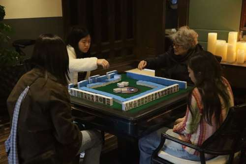
this is in chengdu and my fav memory was shopping and eating w her. And going to the gay clubs!!
30
Robinsons Place Manila
Manila, Philippines
This year lived in iMessage and Instagram DMs.
Hannah cousin
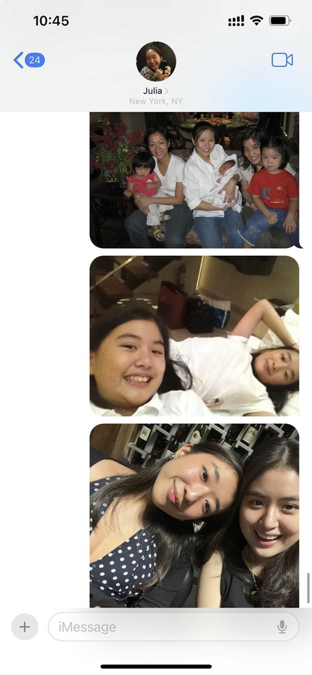
hello dear jubeee, happy 25th birthday ❤️ for the past 23 years, we haven’t gone a year without seeing each other. i can’t believe this is the first year (other than your first year on earth…) where we didn’t spend time together. so i guess for PJ’s super cool map, our memories this year live in imessage texts and instagram dms 🥲 i’ve recently been rewatching a lot of romcoms and i keep thinking about how you introduced me to this fabulous world, spending countless hours with me every sunday rewatching movies you’ve already seen. i couldn’t have asked for a better older sister, cousin, and best friend to grow up alongside me. miss you and love you so much!
Sabine Beanie
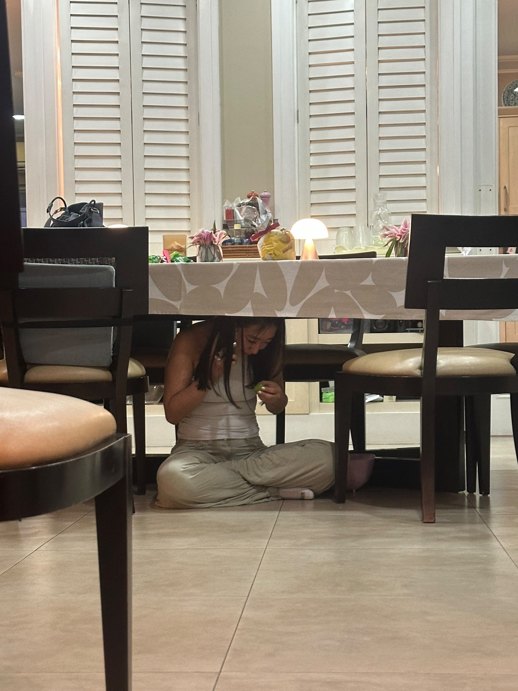
under the table on New Year's Eve, eating the grapes
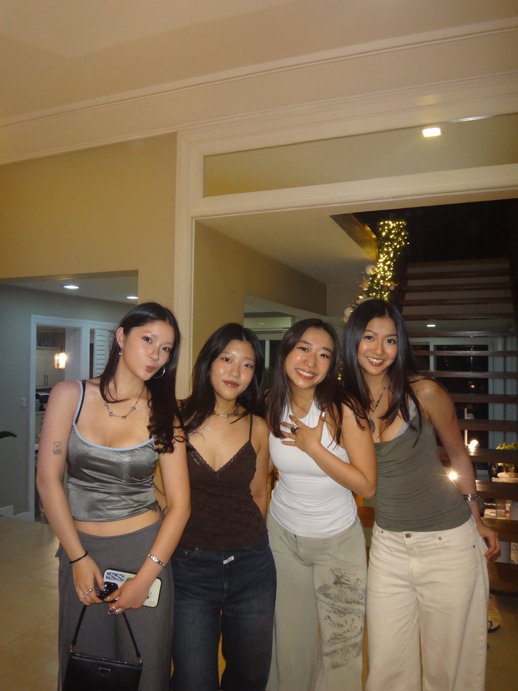
HAPPY BIRTHDAY JUJU 💗💗 hope u have the awesomest birthday ever hehe i love love u so muchie and cant wait to celebrate your bday with u soon !!!! nyc will be so much fun !!!! heehee im thinking of new years eve and how you went under the table (two of them actually) to eat your grapes 😆 so cute and funny and so juju hehehe. see u soooo so super soon !!!!! LOVE U LOVE UUU
Love, Beanie 💗💗💗
Add your own pin
A place you went with Julia that didn’t make the map.
Notes for Julia
For the things that didn’t fit anywhere else.
Add your own pin
A place you went with Julia that didn’t make the map.